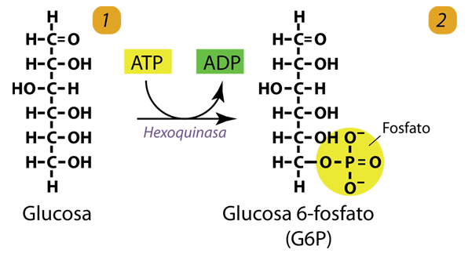
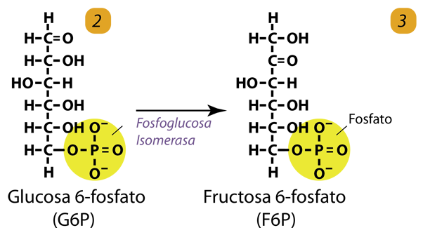
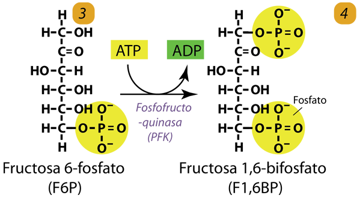
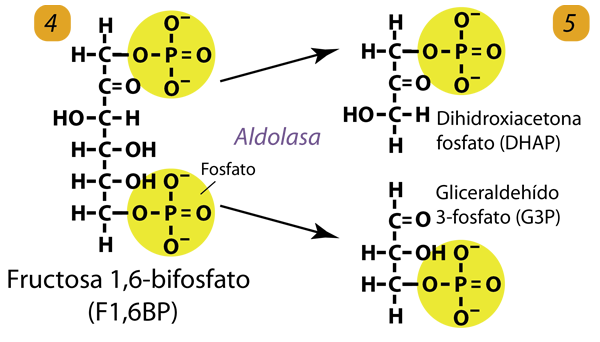
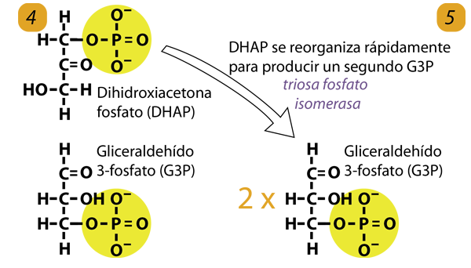

La glucólisis es una serie de reacciones que comienza con la glucosa y tiene como producto final la molécula de piruvato. El piruvato puede entonces continuar la cadena de producción de energía procediendo al ciclo TCA, que produce productos utilizados en la cadena de transporte de electrones para finalmente producir la molécula de energía ATP.

El primer paso en la glucólisis es la conversión de glucosa en glucosa 6-fosfato (G6P) mediante la adición de un fosfato, un proceso que requiere una molécula de ATP para obtener energía y la acción de la enzima hexoquinasa. Cada paso de la glucólisis opera con la ayuda de una enzima, que acelera enormemente las reacciones para permitir que el proceso avance lo suficientemente rápido para las necesidades metabólicas.,las enzimas permiten que las reacciones se desarrollen a la "velocidad de la vida".

Este paso implica un simple reordenamiento de G6P para producir fructosa 6-fosfato (F6P). Forma el sustrato para el siguiente paso, que es un punto de control crucial.

En este paso se requiere un segundo ATP para agregar un segundo fosfato al F6P. Esto forma fructosa 1,6-bifosfato (F1,6BP). La enzima involucrada es la fosfofructoquinasa (PFK). Esta enzima es capaz de controlar toda la ruta como se ve a continuación. Hasta este punto, el proceso implica un reordenamiento con la inversión de dos ATP. Esta energía se utiliza para añadir dos fosfatos y marca el final de la fase de inversión energética.

Catalizada por la enzima aldolasa, el F1,6BP se divide en dos moléculas de tres carbonos, fosfato de dihidroxiacetona (DHAP) y 3-fosfato de gliceraldehído (G3P). Estas dos moléculas son isómeros, y cada una se puede reorganizar fácilmente en la otra.

Catalizado por triosa fosfato isomerasa, el DHAP se reorganiza rápidamente para producir un segundo G3P. El proceso hasta este punto ha convertido una molécula de glucosa de 6 carbonos en dos moléculas de G3P de 3 carbonos.